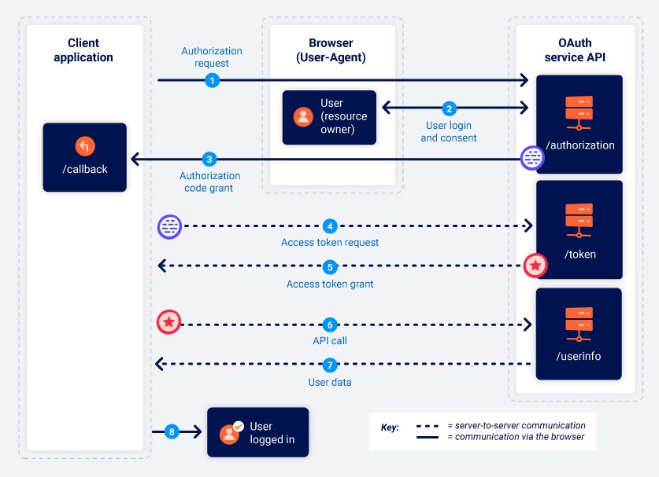
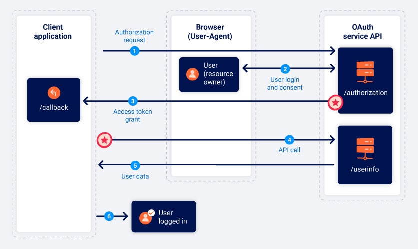

OAuth grant types
In this section, we'll cover the basics of the two most common OAuth grant types. If you're completely new to OAuth, we recommend reading this section before attempting to complete our OAuth authentication labs.
What is an OAuth grant type?
The OAuth grant type determines the exact sequence of steps that are involved in the OAuth process. The grant type also affects how the client application communicates with the OAuth service at each stage, including how the access token itself is sent. For this reason, grant types are often referred to as "OAuth flows".
An OAuth service must be configured to support a particular grant type before a client application can initiate the corresponding flow. The client application specifies which grant type it wants to use in the initial authorization request it sends to the OAuth service.
There are several different grant types, each with varying levels of complexity and security considerations. We'll focus on the "authorization code" and "implicit" grant types as these are by far the most common.
OAuth scopes
For any OAuth grant type, the client application has to specify which data it wants to access and what kind of operations it wants to perform. It does this using the scope parameter of the authorization request it sends to the OAuth service.
For basic OAuth, the scopes for which a client application can request access are unique to each OAuth service. As the name of the scope is just an arbitrary text string, the format can vary dramatically between providers. Some even use a full URI as the scope name, similar to a REST API endpoint. For example, when requesting read access to a user's contact list, the scope name might take any of the following forms depending on the OAuth service being used:
scope=contacts
scope=contacts.read
scope=contact-list-r
scope=https://oauth-authorization-server.com/auth/scopes/user/contacts.readonly
When OAuth is used for authentication, however, the standardized OpenID Connect scopes are often used instead. For example, the scope openid profile will grant the client application read access to a predefined set of basic information about the user, such as their email address, username, and so on. We'll talk more about OpenID Connect later.
Authorization code grant type
The authorization code grant type initially looks quite complicated, but it's actually simpler than you think once you're familiar with a few basics.
In short, the client application and OAuth service first use redirects to exchange a series of browser-based HTTP requests that initiate the flow. The user is asked whether they consent to the requested access. If they accept, the client application is granted an "authorization code". The client application then exchanges this code with the OAuth service to receive an "access token", which they can use to make API calls to fetch the relevant user data.
All communication that takes place from the code/token exchange onward is sent server-to-server over a secure, preconfigured back-channel and is, therefore, invisible to the end user. This secure channel is established when the client application first registers with the OAuth service. At this time, a client_secret is also generated, which the client application must use to authenticate itself when sending these server-to-server requests.
As the most sensitive data (the access token and user data) is not sent via the browser, this grant type is arguably the most secure. Server-side applications should ideally always use this grant type if possible.

1. Authorization request
The client application sends a request to the OAuth service's /authorization endpoint asking for permission to access specific user data. Note that the endpoint mapping may vary between providers - our labs use the endpoint /auth for this purpose. However, you should always be able to identify the endpoint based on the parameters used in the request.
GET /authorization?client_id=12345&redirect_uri=https://client-app.com/callback&response_type=code&scope=openid%20profile&state=ae13d489bd00e3c24 HTTP/1.1
Host: oauth-authorization-server.comThis request contains the following noteworthy parameters, usually provided in the query string:
-
client_idMandatory parameter containing the unique identifier of the client application. This value is generated when the client application registers with the OAuth service.
-
redirect_uriThe URI to which the user's browser should be redirected when sending the authorization code to the client application. This is also known as the "callback URI" or "callback endpoint". Many OAuth attacks are based on exploiting flaws in the validation of this parameter.
-
response_typeDetermines which kind of response the client application is expecting and, therefore, which flow it wants to initiate. For the authorization code grant type, the value should be
code. -
scopeUsed to specify which subset of the user's data the client application wants to access. Note that these may be custom scopes set by the OAuth provider or standardized scopes defined by the OpenID Connect specification. We'll cover OpenID Connect in more detail later.
-
stateStores a unique, unguessable value that is tied to the current session on the client application. The OAuth service should return this exact value in the response, along with the authorization code. This parameter serves as a form of CSRF token for the client application by making sure that the request to its
/callbackendpoint is from the same person who initiated the OAuth flow.
2. User login and consent
When the authorization server receives the initial request, it will redirect the user to a login page, where they will be prompted to log in to their account with the OAuth provider. For example, this is often their social media account.
They will then be presented with a list of data that the client application wants to access. This is based on the scopes defined in the authorization request. The user can choose whether or not to consent to this access.
It is important to note that once the user has approved a given scope for a client application, this step will be completed automatically as long as the user still has a valid session with the OAuth service. In other words, the first time the user selects "Log in with social media", they will need to manually log in and give their consent, but if they revisit the client application later, they will often be able to log back in with a single click.
3. Authorization code grant
If the user consents to the requested access, their browser will be redirected to the /callback endpoint that was specified in the redirect_uri parameter of the authorization request. The resulting GET request will contain the authorization code as a query parameter. Depending on the configuration, it may also send the state parameter with the same value as in the authorization request.
GET /callback?code=a1b2c3d4e5f6g7h8&state=ae13d489bd00e3c24 HTTP/1.1
Host: client-app.com4. Access token request
Once the client application receives the authorization code, it needs to exchange it for an access token. To do this, it sends a server-to-server POST request to the OAuth service's /token endpoint. All communication from this point on takes place in a secure back-channel and, therefore, cannot usually be observed or controlled by an attacker.
POST /token HTTP/1.1
Host: oauth-authorization-server.com
…
client_id=12345&client_secret=SECRET&redirect_uri=https://client-app.com/callback&grant_type=authorization_code&code=a1b2c3d4e5f6g7h8
In addition to the client_id and authorization code, you will notice the following new parameters:
-
client_secretThe client application must authenticate itself by including the secret key that it was assigned when registering with the OAuth service.
-
grant_typeUsed to make sure the new endpoint knows which grant type the client application wants to use. In this case, this should be set to
authorization_code.
5. Access token grant
The OAuth service will validate the access token request. If everything is as expected, the server responds by granting the client application an access token with the requested scope.
{
"access_token": "z0y9x8w7v6u5",
"token_type": "Bearer",
"expires_in": 3600,
"scope": "openid profile",
…
}6. API call
Now the client application has the access code, it can finally fetch the user's data from the resource server. To do this, it makes an API call to the OAuth service's /userinfo endpoint. The access token is submitted in the Authorization: Bearer header to prove that the client application has permission to access this data.
GET /userinfo HTTP/1.1
Host: oauth-resource-server.com
Authorization: Bearer z0y9x8w7v6u57. Resource grant
The resource server should verify that the token is valid and that it belongs to the current client application. If so, it will respond by sending the requested resource i.e. the user's data based on the scope of the access token.
{
"username":"carlos",
"email":"carlos@carlos-montoya.net",
…
}The client application can finally use this data for its intended purpose. In the case of OAuth authentication, it will typically be used as an ID to grant the user an authenticated session, effectively logging them in.
Implicit grant type
The implicit grant type is much simpler. Rather than first obtaining an authorization code and then exchanging it for an access token, the client application receives the access token immediately after the user gives their consent.
You may be wondering why client applications don't always use the implicit grant type. The answer is relatively simple - it is far less secure. When using the implicit grant type, all communication happens via browser redirects - there is no secure back-channel like in the authorization code flow. This means that the sensitive access token and the user's data are more exposed to potential attacks.
The implicit grant type is more suited to single-page applications and native desktop applications, which cannot easily store the client_secret on the back-end, and therefore, don't benefit as much from using the authorization code grant type.

1. Authorization request
The implicit flow starts in much the same way as the authorization code flow. The only major difference is that the response_type parameter must be set to token.
GET /authorization?client_id=12345&redirect_uri=https://client-app.com/callback&response_type=token&scope=openid%20profile&state=ae13d489bd00e3c24 HTTP/1.1
Host: oauth-authorization-server.com2. User login and consent
The user logs in and decides whether to consent to the requested permissions or not. This process is exactly the same as for the authorization code flow.
3. Access token grant
If the user gives their consent to the requested access, this is where things start to differ. The OAuth service will redirect the user's browser to the redirect_uri specified in the authorization request. However, instead of sending a query parameter containing an authorization code, it will send the access token and other token-specific data as a URL fragment.
GET /callback#access_token=z0y9x8w7v6u5&token_type=Bearer&expires_in=5000&scope=openid%20profile&state=ae13d489bd00e3c24 HTTP/1.1
Host: client-app.comAs the access token is sent in a URL fragment, it is never sent directly to the client application. Instead, the client application must use a suitable script to extract the fragment and store it.
4. API call
Once the client application has successfully extracted the access token from the URL fragment, it can use it to make API calls to the OAuth service's /userinfo endpoint. Unlike in the authorization code flow, this also happens via the browser.
GET /userinfo HTTP/1.1
Host: oauth-resource-server.com
Authorization: Bearer z0y9x8w7v6u55. Resource grant
The resource server should verify that the token is valid and that it belongs to the current client application. If so, it will respond by sending the requested resource i.e. the user's data based on the scope associated with the access token.
{
"username":"carlos",
"email":"carlos@carlos-montoya.net"
}The client application can finally use this data for its intended purpose. In the case of OAuth authentication, it will typically be used as an ID to grant the user an authenticated session, effectively logging them in.
Read more
Now that you know a bit more about how the different flows work, you should be able to follow our learning materials on how to exploit vulnerabilities in OAuth-based authentication mechanisms.